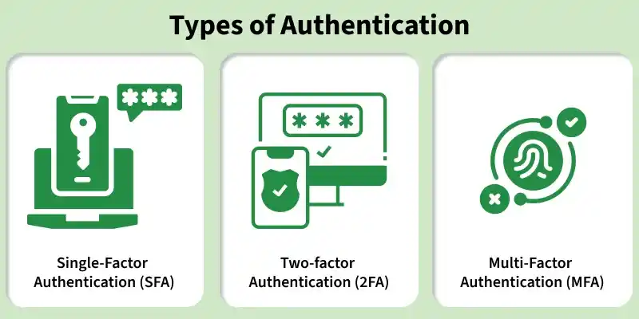

2. Authentication Models
- Overview
- 2.1 Factors (knowledge, possession, inherence…)
- 2.5 Methods (password, physical, biometric)
- 2.2 Core models (centralized, SSO, federated…)
- 2.3 Comparison matrix
- 2.4 Evolution (SFA → continuous)
- 2.6 Applications
- 2.7 Digital auth catalog
Authentication is the process of confirming the identity of a user, device, or system by validating provided credentials before granting access to a network or its resources. In information security, authentication acts as the gatekeeper; before an entity can be granted authorization (permissions), it must prove who it claims to be.
Authentication:
- Prevents unauthorized usage of systems
- Ensures secure interaction within a network environment
- Maintains security, reliability, and trust within the system
This topic covers authentication factors, enterprise models (centralized, SSO, federated), classic methods, factor-based types (SFA, 2FA, MFA), real-world applications, and a catalog of digital authentication techniques.
2.1 The Factors of Authentication (The Foundation)
Every authentication model relies on one or more of the fundamental Authentication Factors. To build a resilient system, security models combine these factors to ensure that a compromise of one factor does not result in an immediate system breach.
Knowledge Factor (Something You Know)
Information that the user must remember and reproduce.
Examples: Passwords, PINs, secret answers to security questions, cryptographic passphrases.
Possession Factor (Something You Have)
A physical or digital object that the user must explicitly own and access.
Examples: Hardware security keys (e.g., YubiKey), smart cards, software-based OTP tokens (TOTP apps like Google Authenticator), SMS/Email verification codes.
Inherence Factor (Something You Are)
Biological and physical characteristics unique to the individual.
Examples: Biometrics (fingerprints, retina/iris scans, facial geometry, voice recognition).
Behavioral Factor (Something You Do — Emerging)
Gestures, dynamics, or patterns exhibited by the user.
Examples: Keystroke dynamics (typing speed and rhythm), mouse movement patterns, gait analysis.
Location / Context Factor (Somewhere You Are)
Geographic or network boundaries used to validate identity.
Examples: IP address whitelisting, GPS coordinates, geofencing parameters.
2.5 Authentication Methods
Authentication can be implemented using different techniques based on the type of credentials used. The following are commonly used methods in practice.
2.5.1 Password-Based Authentication
The most commonly used authentication technique. Each user is assigned a unique username and password. During login, the entered password is compared with the stored (usually hashed) password. If credentials match, access is granted; otherwise, access is denied.
Security depends on password strength and protection against attacks such as guessing, brute force, or phishing. See also password authentication in §2.7.
2.5.2 Physical Identification
Uses physical objects such as ID cards, badges, tokens, or smart cards. The system verifies possession of the physical item to authenticate the user. Often combined with passwords or PINs to increase security.
- Smart cards can store authentication data internally
- Commonly used in ATMs, offices, and restricted access areas
- Loss or theft of the card can pose a security risk
2.5.3 Biometric Authentication
Relies on unique biological or behavioral characteristics. Eliminates the need to remember passwords or carry physical tokens; difficult to replicate, but requires specialized hardware and accurate data capture.
Common biometric techniques:
- Facial recognition — analyzes facial features
- Fingerprint recognition — uses ridge patterns of fingers
- Hand geometry — measures shape and size of the hand
- Retinal pattern recognition — scans eye structure
- Signature verification — analyzes writing style
- Voice recognition — matches voice frequency patterns
2.2 Core Authentication Models
Different architectures manage identity verification based on organizational scale, security requirements, and technical constraints. Below are the primary authentication models used in modern computing.
1. Centralized Authentication Model
In a centralized model, all user credentials and authentication logic reside within a single, dedicated central repository. When a user attempts to log into any connected workstation or application, that system forwards the credentials to the central authentication server for validation.
[ User Client ] ----(Login Request)----> [ Application / Server ]
│
(Validates Credentials)
▼
[ Central Auth Server ]
(Active Directory / LDAP)
How it works: Applications do not store passwords locally. Instead, they query a central database using standardized protocols like LDAP (Lightweight Directory Access Protocol) or RADIUS (Remote Authentication Dial-In User Service).
Example: Microsoft Active Directory (AD) running inside an enterprise network. An employee can use the exact same username and password to log into their desktop computer, the company Wi-Fi network, and the internal file sharing portal.
Pros:
- Centralized management (passwords can be revoked or changed instantly in one place).
- Consistent enforcement of password complexity policies.
Cons:
- Represents a Single Point of Failure (SPOF); if the central authentication directory goes down, no one can log into any service.
2. Decentralized / Distributed Authentication Model
In a decentralized or distributed model, individual systems or domains maintain their own independent user databases and authentication mechanisms. There is no overarching central authority that dictates identity validation.
How it works: Each application or database keeps its own isolated user tables (e.g., a standard
WordPress wp_users table or a standalone custom Linux server managing its own /etc/passwd file).
Pros:
- Isolation; if one system is completely compromised, the credentials on other systems remain safe (provided users didn't reuse the same password).
- No reliance on a single central server or network connection.
Cons:
- Administrative nightmare at scale. If an employee leaves the company, an administrator must manually log into every single isolated application to delete that user's account.
- Poor user experience; users must memorize dozens of different passwords.
3. Single Sign-On (SSO) Model
Single Sign-On is an authentication architecture that allows a user to log in once to a centralized provider and subsequently gain access to multiple independent software systems or web applications without being prompted to enter credentials again.
How it works: SSO shifts the burden of authentication away from the application (Service Provider / SP) to a dedicated identity management system (Identity Provider / IdP). The IdP validates the user and issues a cryptographically signed digital token (e.g., an XML or JWT token) back to the application to prove the user's identity.
Key Protocols:
- SAML 2.0 (Security Assertion Markup Language): An XML-based open standard heavily utilized in enterprise environments to exchange authentication and authorization data between an IdP (like Okta) and an SP (like Salesforce).
- OIDC (OpenID Connect): A modern identity layer built directly on top of the OAuth 2.0 framework. It uses simple JSON Web Tokens (JWT) and is highly optimized for mobile and modern web-based applications.
Pros:
- Incredible user experience; one password to rule them all.
- Reduces password fatigue, reducing the likelihood that users write passwords down on sticky notes.
Cons:
- If an attacker compromises the primary SSO account, they instantly gain access to all connected cloud applications and services.
4. Federated Identity Model
Federated authentication extends the concepts of SSO across entirely different organizations, security domains, or autonomous networks. It allows users to use their internal corporate credentials to securely access resources belonging to external partner companies.
How it works: A trust relationship is explicitly established between separate organizations. Organization A trusts Organization B to authenticate its own users. When a user from Organization B tries to access a portal in Organization A, Organization A asks Organization B's IdP to verify them.
Example: "Login with Google", "Login with GitHub", or a university student using their campus login details to access external academic research journals (via frameworks like Shibboleth).
Pros:
- Allows cross-organizational collaboration without forcing external partners to create new accounts in your internal network.
Cons:
- Complex trust negotiations and cryptographic key configurations are required between external legal entities.
5. Peer-to-Peer / Decentralized Identity (SSI / Web3 — Advanced)
An emerging model where identity is not held by any company or central server at all. Instead, it relies on Self-Sovereign Identity (SSI).
How it works: Users store their credentials in a secure personal digital wallet. When an application requests authentication, the wallet provides a mathematically verifiable cryptographic proof over a decentralized network (like a blockchain) without ever revealing the underlying private data.
2.3 Comprehensive Comparison Matrix
| Feature | Centralized (LDAP/AD) | Decentralized (Local Database) | Single Sign-On (SSO) | Federated Identity |
|---|---|---|---|---|
| Credential Storage | Single Central Directory Server | Every machine holds its own user data | Dedicated Identity Provider (IdP) | Home Organization's IdP |
| User Experience | Good (One credential for internal network) | Poor (Multiple credentials to track) | Excellent (Log in once for all cloud apps) | Excellent (Use existing identity externally) |
| Scope of Trust | Inside a single internal corporate network | Confined strictly to that specific host | Across multiple enterprise applications | Across completely distinct organizations |
| Primary Protocols | LDAP, Kerberos, RADIUS | Local OS / Cryptographic Hashes | SAML 2.0, OpenID Connect (OIDC) | SAML 2.0, WS-Federation |
| Blast Radius | High (Internal domain control) | Low (Only that specific server is lost) | Very High (All connected apps exposed) | — |
When to use which authentication model
| Model | Use when |
|---|---|
| Centralized | Single org domain; LDAP/AD for all internal apps |
| Decentralized | Legacy per-app accounts; isolation between systems |
| SSO | Many internal apps; one login for employees |
| Federated | Partners log in with their own IdP (B2B, cloud SaaS) |
2.4 Deep Dive: Evolution of Authentication Methods (From Static to Continuous)
Read §2.1 Factors and §2.5 Methods before this section. Builds on §2.2 Models.
Now that we understand how identity architectures are structured (Centralized, SSO, Federated), let's look closely at the methods and operational logic used to actually execute authentication.
Authentication has evolved from static, one-time checks (like entering a password) into dynamic, real-time context assessments that constantly track whether a user can be trusted.
Authentication systems are classified by how many independent factors verify identity. Increasing factors improves security by reducing reliance on a single credential. See also §2.5 for classic credential methods.

1. Single-Factor Authentication (SFA)
Single-Factor Authentication requires the user to provide exactly one proof of identity from any of the authentication categories (typically a Knowledge factor) to gain access to a system.
How it works: The user enters a username and a static password. The system hashes the incoming password, compares it against the stored hash in the database, and grants access if they match.
The Vulnerability: SFA represents a major security risk in modern systems. If an attacker steals, guesses, or phishes that single factor, they gain complete control over the account. There is no fallback defense.
Advantages:
- Simple and quick to use
- Easy to implement and manage
- Cost-effective for basic systems
Disadvantages:
- Provides limited protection
- Easily compromised through weak passwords, phishing, or brute-force attacks
2. Two-Factor Authentication (2FA)
Two-Factor Authentication significantly elevates security by requiring the user to present two distinct types of factors before gaining entry.
The Core Rule: To be true 2FA, the factors must come from different categories. Entering two different passwords or answering two secret questions is not 2FA (that is just two pieces of the Knowledge factor). True 2FA combines Something you know (Password) with Something you have (OTP token / Hardware Key).
Common 2FA Implementations:
- SMS/Email OTP: The server generates a random code and sends it via cellular networks or email. (Note: SMS 2FA is highly vulnerable to SIM-swapping and intercept attacks).
- TOTP (Time-Based One-Time Password): An app (like Google Authenticator) uses a shared secret seed and the current Unix time to generate a unique 6-digit code every 30 seconds. This happens entirely offline on the client device.
- Push Notifications: The server sends an encrypted cryptographic challenge directly to a registered mobile app. The user simply taps "Approve".
Advantages:
- Significantly improved security over SFA
- Reduces the impact of stolen or leaked passwords
Disadvantages:
- Adds an extra step during login
- Depends on additional devices or network connectivity
3. Multi-Factor Authentication (MFA)
Multi-Factor Authentication is an enterprise-grade extension of 2FA. While 2FA is strictly limited to two factors, MFA can utilize three or more distinct factors to build an incredibly resilient perimeter.
How it works: In highly secure environments (like banking cores, defense systems, or server root access), a user might be forced to satisfy multiple security layers:
MFA = Password (Know) + Hardware Key (Have) + Biometric Scan (Are)
Why it matters: MFA reduces the probability of a successful account takeover to near zero, as bypassing it requires an attacker to simultaneously compromise a user's digital memory, steal their physical hardware device, and spoof their unique biological traits.
Advantages:
- Strong protection against unauthorized access
- Minimizes risks from credential compromise
Disadvantages:
- More complex to deploy and manage
- Higher cost and possible dependency on third-party services
4. Risk-Based Authentication (RBA)
Risk-Based Authentication (also known as Static Contextual Authentication) evaluates contextual metadata during the initial login attempt to calculate a dynamic risk score. The system then alters its behavior based on that score.
[Login Attempt] ──► [Risk Engine evaluates: IP, Location, Device, Time]
│
├──► Low Risk ──► Grant Access
└──► High Risk ──► Trigger Step-Up Challenge (MFA)
How it works: The authentication engine checks specific variables against the user's historical profile:
- Is this a recognized device/browser?
- Is the login request originating from a normal IP address range or geographic location?
- Is the request happening at a standard time of day for this user?
Actionable Outcomes:
- Low Risk: User enters their password and is logged in seamlessly (Frictionless experience).
- Elevated Risk: The user logs in from a new city. The system triggers a Step-Up Authentication challenge, forcing them to complete an extra MFA prompt before entry.
5. Federated Authentication
As covered briefly in the architectural models, Federated Authentication is a method that allows a user's single identity to be authenticated across entirely separate, independent corporate or web ecosystems without transferring the actual password.
The Protocol Mechanism (OIDC/SAML):
- The user attempts to access an external application (Service Provider — SP).
- The SP redirects the user's browser to their trusted home Identity Provider (IdP).
- The user authenticates securely at their IdP.
- The IdP generates an encrypted, digitally signed identity token containing an expiration timestamp and sends it back via the browser to the SP.
- The SP verifies the token signature using the IdP's public cryptographic key and logs the user in.
6. Adaptive Authentication
Adaptive Authentication is an advanced, intelligent evolution of Risk-Based Authentication. While RBA often relies on static, pre-defined administrator rules (e.g., "If IP changes, trigger MFA"), Adaptive Authentication uses machine learning and AI to construct a baseline of normal user behavior (UEBA — User and Entity Behavior Analytics).
Dynamic Behavior Tracking: It creates a fluid profile of how you interact with systems. If you suddenly try to download an unusually large volume of enterprise files at 3:00 AM on a Sunday from an AWS cloud instance, the adaptive engine marks this as highly anomalous.
Dynamic Enforcement: It can dynamically adjust access rights on the fly—not just prompting for MFA, but completely restricting access to sensitive database tables while keeping basic email access open until identity can be verified by an administrator.
7. Continuous Authentication
Traditional authentication methods treat security as a single checkpoint event: once you pass the door, the system assumes you are that person until you log out. Continuous Authentication destroys this assumption by continuously validating the user's identity throughout the entire active session.
How it works: It runs quietly in the background without interrupting the user's workflow, continuously analyzing Behavioral Biometrics and contextual indicators:
- Keystroke Dynamics: The precise flight time and dwell time of keys as you type (your unique typing rhythm).
- Mouse/Touch Movement: The arc, acceleration, and specific drag speed of your mouse cursor or finger on a touchscreen.
- Proximity Checks: Using Bluetooth tokens or device cameras to verify the authorized user is still sitting physically in front of the laptop display.
The Security Payload: If the behavioral signature suddenly changes (suggesting the user walked away from their unlocked laptop and a malicious coworker sat down), the system instantly locks the terminal, revokes active session tokens, and demands a full re-authentication.
Comparison Summary: Context-Aware Authentication Methods
| Authentication Method | When does evaluation happen? | What triggers a challenge? | User Friction Level |
|---|---|---|---|
| Risk-Based (RBA) | At login checkpoint only. | Deviances from static rules (e.g., unknown IP, new country). | Medium (Only when context changes). |
| Adaptive Auth | At login and major transition actions. | AI-detected anomalies in user behavior patterns and access scope. | Low to Medium (Smart prompting). |
| Continuous Auth | Continuously (Every second of the active session). | Sudden shifts in typing cadence, mouse dynamics, or physical proximity. | Zero (Frictionless until an anomaly occurs). |
2.6 Applications of Authentication
Authentication is widely used in computer networks and systems to ensure secure, controlled access to resources. Common applications include:
- User login systems: Verifies identity in operating systems, websites, and applications before access is granted.
- Banking and financial systems: Secures ATMs, mobile banking, and online transactions using PINs, OTPs, and biometric authentication.
- Network access control: Restricts access to private and enterprise networks to authorized users and devices only.
- Email and cloud services: Protects sensitive user data using password-based and multi-factor authentication.
- Enterprise and organizational systems: Controls access to internal servers, applications, and confidential organizational resources.
2.7 Types of Digital Authentication
Reference catalog — read after §2.2 Models, §2.3 Matrix, and §2.4 Evolution. Overlaps are intentional for lookup.
Digital authentication is the process of confirming the legitimacy of a user or device accessing digital resources. It builds trust in identities supplied digitally to an information system and acts as the first line of protection for organizational apps, data, and services.
In the modern world, virtually every organization, system, network, website, or server requires authentication. Cybercriminals use increasingly sophisticated methods; simple password credentials alone are often insufficient. Organizations implement layered security, balancing usability and security when choosing techniques.
2.7.1 Single-Factor Authentication
A single credential (password, PIN, or security questions) confirms identity. Examples: username/password, numeric PIN, predetermined security questions. User-friendly and simple to deploy, but the least secure—a single compromised credential can lead to account takeover. See §2.4 SFA.
2.7.2 Two-Factor Authentication
Requires two distinct forms of identification—typically something you know (password) and something you have (OTP, token, smart card). Second-factor examples: email/SMS OTP, security questions, biometric scans, USB hardware tokens. Blocks most remote attacks even if the password leaks. See §2.4 2FA.
2.7.3 Multi-Factor Authentication
Requires two or more login credentials from different factor categories. May combine passwords, devices, and biometrics; supports context-based and behavioral checks. See §2.4 MFA.
2.7.4 Password Authentication
The user enters a unique ID and secret key compared against stored credentials. Passwords combine letters, numbers, and symbols known only to the legitimate user.
Best practices:
- Minimum of 8 characters (ideally no more than 12 in some policies)
- Mix of uppercase, lowercase, symbols, and numerals
- Avoid reuse across sites; use a password manager where possible
2.7.5 Passwordless Authentication
Authenticates users without a traditional password—often via ownership of a secondary device/account or a biometric trait (fingerprint, face). Reduces phishing and password-management cost; improves user experience while increasing security when implemented correctly.
2.7.6 Certificate-Based Authentication
Digital certificates use cryptography (PKI) to authenticate users, devices, and systems.
- Smart cards / USB tokens: Store certificates in tamper-resistant hardware
- Machine certificates: Authenticate devices joining networks
- Mobile device certificates: Verify users on phones accessing corporate resources
2.7.7 Adaptive Authentication
Adjusts requirements based on context—IP, device, location, time of access. Combines static policies with machine learning to balance security and user experience. See §2.4 Adaptive Authentication.
2.7.8 SAML and Authentication Protocols
Security Assertion Markup Language (SAML) is a primary protocol for web-based authentication and authorization, often used with Single Sign-On. Related protocols include:
- LDAP (Lightweight Directory Access Protocol)
- SAML (Security Assertion Markup Language)
- RADIUS (Remote Authentication Dial-In User Service)
- OAuth (Open Authorization)
Enterprise SSO details: §2.2 Single Sign-On.
2.7.9 Biometric Authentication (Digital)
Uses unique biological traits that are difficult to duplicate. Techniques include iris recognition, fingerprint authentication, palm-vein patterns, and voice recognition compared against stored templates. See also §2.5.3.
2.7.10 Behavioral Authentication
Measures distinct patterns in how a person uses devices (typing, mouse movement, touch). Less intrusive because users need not perform extra steps, but behavioral biometrics are still maturing for widespread deployment. CAPTCHA (see §2.7.16) distinguishes human from automated input rather than verifying identity.
2.7.11 Token Authentication
A form of two-factor authentication: first factor is something you know (password/PIN); second is a hardware or software token generating a frequently changing code (often every 60 seconds). Hardware tokens are strong for high-security environments; benefits include improved cross-platform protection and reduced credential theft risk.
2.7.12 Device Recognition
Authorizes known devices and then their users. Endpoint management platforms register hardware and may grant faster access to trusted devices—common in BYOD (Bring Your Own Device) policies. Some apps skip repeated prompts once a device is recognized as secure.
2.7.13 Out-of-Band Authentication
A 2FA variant requiring verification over a separate channel (e.g., mobile network vs. internet connection). Used heavily in banking and high-security enterprises. Lower deployment cost and minimal user friction while keeping communications on a distinct channel from the login session.
2.7.14 API Authentication
APIs secure web services with additional protection layers. Common approaches:
- HTTP Basic Authentication: Username and password in the request (no cookies/session IDs)
- API keys: Identify the origin of requests; keys linked to tokens on registration
- OAuth: Widely used for API auth; supports authorization and authentication with scoped access
2.7.15 Single Sign-On (SSO)
One set of credentials accesses multiple applications. Popular approaches:
- SAML 2.0 — XML-based SSO between identity providers and service providers
- OAuth 2.0 — Authorization flows for web, mobile, and desktop
- OpenID Connect (OIDC) — Identity layer on OAuth 2.0
Architecture and flows: §2.2, §2.4 Federated.
2.7.16 CAPTCHAs
CAPTCHA (Completely Automated Public Turing test to tell Computers and Humans Apart) helps distinguish humans from bots. Uses include:
- Poll accuracy — reduce automated vote rigging
- Service registration — limit fake account creation
- Ticketing — prevent scalpers from bulk-buying tickets
- Comments and forums — reduce spam and bot flooding
2.7.17 Vault Authentication Methods
Validates user or machine identity against internal or external systems. Vaults often support protocols such as LDAP, AppRole, and GitHub authentication for secrets management.
2.7.18 Wireless Authentication Methods
- WEP (Wired Equivalent Privacy): Early 802.11 method aiming to make wireless as secure as wired; supports open and shared-key authentication (now considered weak).
- 802.1X / EAP: Restricts network access to clients that authenticate via a port-based control standard; used with enterprise Wi-Fi and RADIUS backends.
2.7.19 How to Select the Correct Authentication Technique
Consider the following when choosing a method for your organization:
- Risk profile: Sensitive data or high-risk transactions (e.g., finance) need stronger methods such as MFA.
- User-friendliness: Overly complex processes encourage workarounds (written passwords, shared accounts).
- Convenience: Processes should be completable reliably; frequent device failures frustrate staff.
- Customer satisfaction: Users want strong protection without excessive friction.
- Privacy: Authentication should not unnecessarily compromise personal privacy.
Conclusion: Digital authentication is a cornerstone of modern cybersecurity. Combining passwords, biometrics, multi-factor methods, SSO, and context-aware controls strengthens the security posture of any digital environment as threats continue to evolve.
- Authentication verifies identity before authorization grants access.
- Five factors: knowledge, possession, inherence, behavioral, location/context.
- Models: centralized, decentralized, SSO, federated, SSI — pick by org structure.
- SFA < 2FA < MFA; evolution adds risk-based, adaptive, and continuous auth.
- §2.7 is a catalog of digital techniques — cross-reference §2.4 for evolution detail.